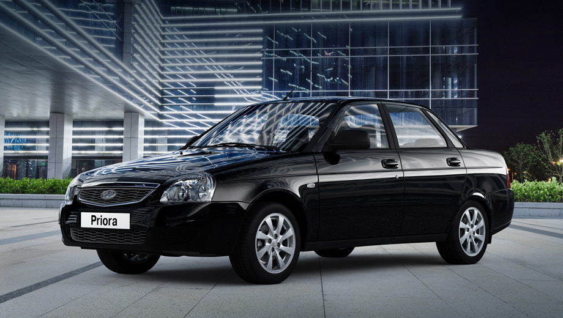

Название для модели придумывали в московском рекламном агентстве BBDO Instinct. Специалисты компании подготовили предварительный список из 250 вариантов имён: «Приоры» в нём не было, зато был «Приоритет». Как вспоминает Александр Бредихин, вариант Prioritet показался ему неплохим, но длинноватым для написания на крышке багажника, да и с названием марки «Лада» он не сочетался.